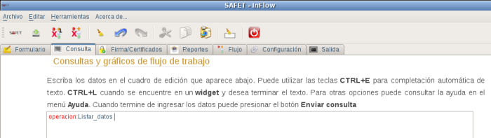
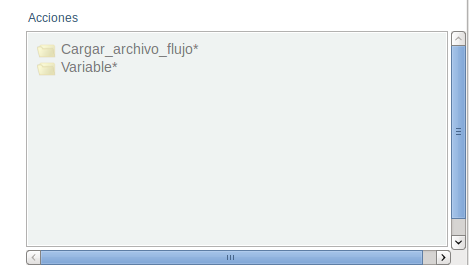
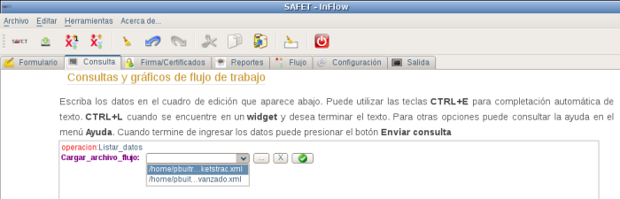
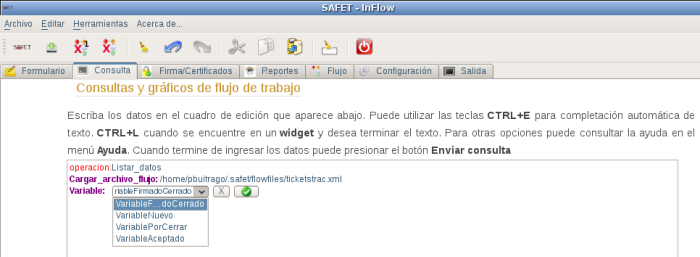
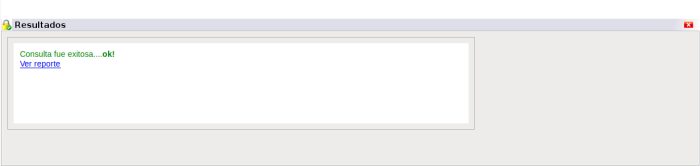
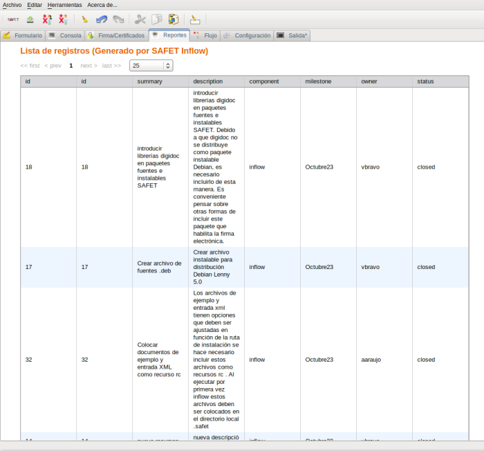

operacion:Listar_datos del menú inteligente, y en el área de cuadro de edición debe aparecer la linea de texto operacion:Listar_datos, (ver figura S3.2.1-1) aparte debe aparece el menú inteligente con los campos relacionados con esta operación (ver figura S3.2.1-2)
operacion:Listar_datos
Listar_datos
campo cargar_archivo_flujo* del menú inteligente, debe aparecer en el área de cuadro la linea de texto operacion:Cargar_archivo_flujo junto con un botón de selección para marcar el documento de flujo de trabajo a consultar (ver figura S3.2.1-3). Los documentos de flujo de trabajo por omisión se deben guardar en la ruta {/home/usuario}/.safet/flowfiles/ (en este ejemplo el usuario puede sustituirse por pbuitrago). Debe ser incluido en el archivo de configuración safet.conf que se encuentra en el directorio /home/usuario/.safet/safet.conf en la sección “ [Widgets] ” (ver figura S3.2.1-4)

safet.conf, sección [ Widgets ] documentos de flujo de trabajo
En este ejemplo tengo incluido en el archivo safet.conf solo dos documentos de flujo de trabajo (ticketstrac.xml y ticketstracavanzado.xml). Luego de seleccionar el documento de flujo de trabajo a consultar se click sobre el campo Variable* del menú inteligente, y en el área de cuadro de edición debe aparecer la linea de texto Variable, junto con un botón de selección para marcar el estado que quiere listar (ver figura S3.2.1-5), y hace click en el botón enviar, si no presento problema, se muestra en la parte inferior izquierda del cuadro de dialogo el mensaje:
Consulta fue exitosa....ok!
(ver figura S3.2.1-6).
Este procedimiento genera un reporte de las variables que se encuentra en el estado seleccionado ver figura (ver figura S3.2.1-7)
Ver reporte


